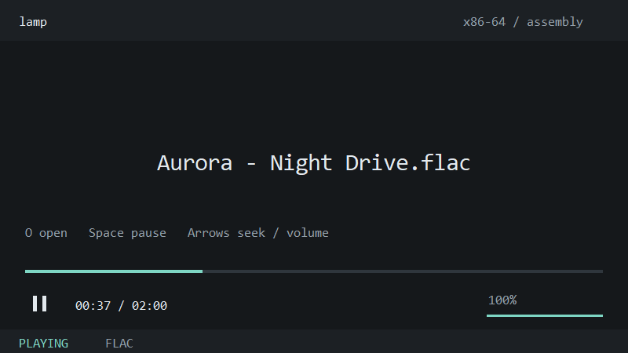

184 KiB GUI.
The development Windows executable includes its icon and Opus decoder. Windows system services handle audio output and the window; the player brings its own assembly decoders.
Windows x86-64 · Assembly · MIT
Lev's Assembly Media Player.
A small audio player with handwritten assembly decoders and a quiet, compact interface. Built to use fewer resources. Growing toward the media you play in mpv.
Source builds: WAV, FLAC, MP3, Vorbis and development Opus. Downloaded v0.3.0 includes the first four formats.

The development Windows executable includes its icon and Opus decoder. Windows system services handle audio output and the window; the player brings its own assembly decoders.
A separate decoder feeds a PCM queue. Event-driven WASAPI playback absorbs short scheduling stalls, with no decoder work in the audio refill path.
Drop a file, pause with Space, seek with the arrows. Controls fade from view during playback, and redraw timers stop while idle or paused.
Mono/stereo within the documented codec profiles. Source builds play Ogg/Opus family 0 with RFC 8251 updates; all 120 official vector checks pass. Video, subtitles and streaming are not yet available. Read exact coverage and limits ↗
The goal is to support everything relevant that mpv supports: formats, playback, rendering, subtitles, streaming and automation, while keeping the runtime small and measuring every performance claim.
Ogg family 0 playback and all 120 official vector checks pass.
Fast seeking, playlists, multichannel and device changes.
AAC, ALAC and the broader audio/container ecosystem.
Modern video formats, hardware decode and efficient presentation.
Timed text, styled subtitles, HTTP, HLS and DASH.
Configurable controls, IPC and the relevant long tail of media.
The prototype has reference PCM comparisons and bounded stress tests. CPU comparisons against mpv and VLC are still ahead. Buffering reduces the risk of stutters; no player can guarantee uninterrupted audio through arbitrary system or driver stalls.
Inspect the recorded verification ↗